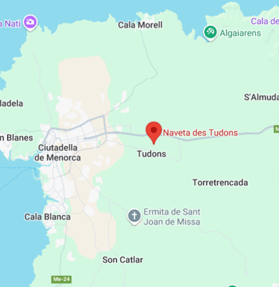

Descripció
Naveta des Tudons és una naveta d'enterrament en forma de nau invertida construïda cap al 1000 aC. Actualment, està restaurada i el jaciment està obert als visitants mitjançant pagament d'entrada d'abril a octubre.
Ubicació
Naveta des Tudons està situada al terme municipal de Ciutadella de Menorca.

Imatges